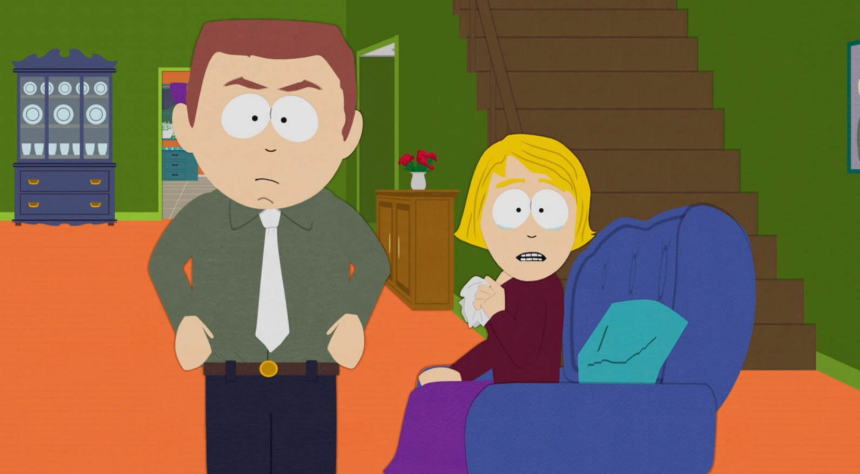
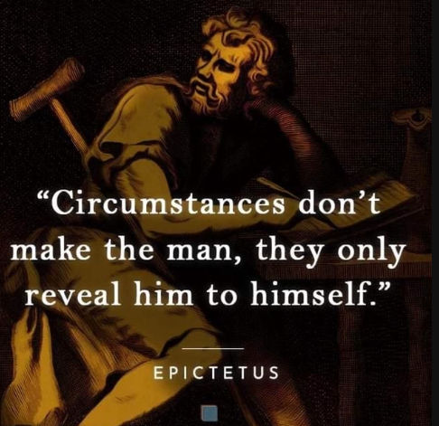
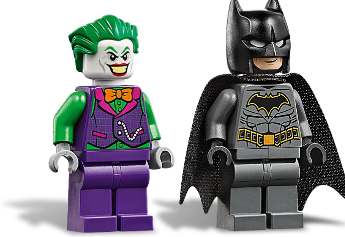
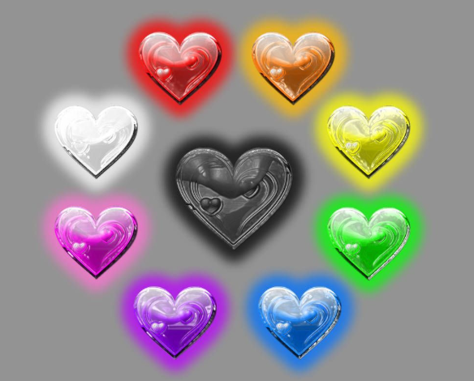

I know of many people that have had bad childhoods, I myself didn't have an amazing one, but it was far from awful either. And so I choose to make myself grateful. I know that suffering isn't a competition, but I feel like so many people have it worse off that I shouldn't complain so much.
There are some people that have had awful things happen to them in their lives, and for some of these people, they turned for the worse. I've seen people that are rude, radiating unhappiness, or some have even done bad things to other people.
Yet, I've seen people with terrible life experiences and upbringing also be some of the most kindest, loving, and sympathetic people in existence. How can it be that people with the same experience turn out in different ways?
The only logical thing to think is that it can't be ones past or childhood that caused them to be who they are...right? I think that this is a very complicated part of human understanding, and there is likely a lot of nuance.
But to quote a wise philosopher who lived in the days of Yore, "Circumstances don't make the man, they only reveal him to himself."

Taking apart the meaning behind Epictetus' quote, I believe it to be saying that a bad thing happening to you does not make you into a bad person no matter what you do afterwards. But rather your reaction to the thing happening reveals your true character.
Some people in my life were neglected and or abused awfully throughout their upbringing. And some of these people, or other people covering for them, have tried to pin the blame on their childhoods or experiences for why they lie to people, use and manipulate people, make promises they don't keep, take but won't give back, etc.
And it is true that many people who were abused will abuse others, many people who were exposed to drugs will likely do them as they get older, yet this doesn't happen to everyone.
Childhood trauma can affect you deeply. From issues with socializing and expressing yourself, to issues with abandonment and attachment, to confidence issues and affecting the ability to understand, give and receive love.
When it comes to your personality, or your psychological profile, your experiences do have an affect on who you are, also known as neuroplasticity.
But each and every human being is taught right from wrong, as it is hardwired into our society. Even if your guardians and all loved ones truly didn't impart it to you, our media and culture, or perhaps teachers and influencers all certainly would.
Even if all of ours hearts don't wake to joy at the same tone, there is a fundamental concept we all share of love and the importance of love. Unless you are very mentally ill or spiritually conflicted, in which some of those people still understand the importance of love and care, but don't reciprocate it (i.e. psychopaths and narcissists.

This leads to a question as old as time, are some people just born evil, or is it environmental?
We all suffer, I'm a firm believer that every single person has had something terrible happen to them in their lives. And I'll take it a step further and say that more people have bad childhoods than good ones.
I honestly don't think that perfect "Brady Bunch" family exists or has ever existed. And yet many people learn to be good to others, and to desire love. So when you have people who don't desire love, but want to see what they can get from people, and play the victim and say "pity me" and throw the legitimately horrible things that have happened to them in peoples faces, then I believe there is only one conclusion that be drawn from this.
They aren't "awful people" BECAUSE of the things that have happened to them, but rather they're "awful people" that have also had bad things happen to them. They were just given something to use for why they do what they do.
Now is this completely objective? I myself am not certain. I think some awful experiences can make some people more mean or negative than what they would've been. But I feel that in order to inflict harm upon people, whether physical, or emotional then you need to honestly be that way at your core, stripping away environmental factors.
A lot of people turn to drugs and alcohol as a way to cope with the harm that has been done to them. And I believe that people who use drugs as a coping mechanism are the ones who struggle with addiction the most versus people who do it recreationally.
I also believe that drugs are a health issue, not a criminal issue. A lot of people addicted to drugs do struggle with mental health, and I don't think that makes them bad people.
Just because someone has an addiction doesn't make them comparable to a ki*ler or a ra*ist. Now, drugs can make people do awful things they typically wouldn't do to someone.
And for all of these reasons, we need to help people with addiction get help. And if we criminalize it, then we're just scaring people away from trying to get the help that they need.
And I've seen people use drugs as a coping mechanism for their tragedies, then proceed to borrow your money to get their fix, lie about it, and get more angry and mean as time goes on. It's a cycle that needs to break, and it starts by admitting that there's something wrong and seeking help, and the people who can give help being receptive.
Listen, I'm a firm believer that all people can be bad, and are bad in their own way, and I'm no exception to this.
We all have had awful things happen to us for the most part. And these things definitely have an impact on all of us in some way. But to use your past as a way to use and gain from other people, or as a reason for why you did something wrong when confronted is wrong.
I've wanted to preach about this out into the void of cyberspace for some time now. Even if my little blog only got 3 views then that would make me happy that someone took the burden of my frustration in words.
If I came off as insensitive in any way then I am most certainly sorry. But I've been around a lot of people like who I've described and it gets to me. Peace and love!

Return to main page